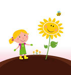
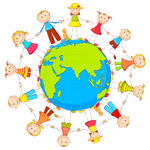

Early Childhood Education Centre
A world class preschool and daycare
Preschool Summer Camp Information
.jpg)
Camp Firefly strives to create an engaging environment that meets the needs of each child. This preschool camp is designed to encourage a child's development: intellectually, physically, socially, and emotionally. The activities provided cover a variety of positive learning experiences, which include music, literature, language arts, social interaction and creative arts. A positive self-image and healthy relationships are a vital part of a child's development and our program strives to meet this goal.
Activities are organized around the individual interests of the children and capitalize on the special talents of the staff members. Within our centers, the staff works together to plan a program that is developmentally appropriate, encourages child-initiated activities and results in outcomes that spark new interests and promotes pride in accomplishments.
We hope you enjoy what we have planned!

Science and Discovery
his week, the students will learn about the life cycle of butterflies. They will also get to study various insects and learn about their differences and similarities. Finally, students will get to sow their own plants and watch them grow.
Arts and Crafts
This week, the students will explore primary and secondary colors to see what new colors emerge when they are mixed. We will also use different materials (recyclables) to create interesting crafts.
Come lets Cook!
Roll up your sleeves and get ready to slice and dice at ICC Preschool Cooking Camp! Young chefs learn the basics of cooking using baking, boiling, grilling, and stir frying etc. In each session we will focus on how to follow a recipe, measure ingredients and practice food & kitchen safety. Our hands-on camp focuses on cooking from scratch using fresh, nutritional ingredients, leaving campers with a delicious sense of accomplishment and a lifelong appreciation for healthy eating.
Puppets and Stories
Playing with puppets and making up imaginary stories is always fun. This week, the children will have the opportunity to play with different types of puppets
Farm Animals
.jpg)
Farming is important for our life. Farm animals produce many things for our life. In farm animals theme children will learn how farm animals helps us. Who and how to take care farm animals. All through this week the children may learn Names of farm animals, sounds of farm animals, Food and homes of farm animals. The children will take part in many different activities related to this theme like art projects, stories, songs, puzzles and more.
Community Helpers

Come and have fun with community helper's theme activities for preschool summer session this week. We will choose and study a few community helpers' this week. We will learn about the different jobs that they do and participate in related activities. We will read different books and enjoy crafts, printable activities, coloring pages and related to the theme.
Cultural Immersion
.jpg)
we will focus on different activities related to the Indian culture, values and traditions. We will read stories from India and participate in arts and crafts from India. We will also be celebrating the Indian Independence Day this week. We will learn about the tri color flag, what each color signifies, what freedom means and how important is it to have FREEDOM!


.jpeg)